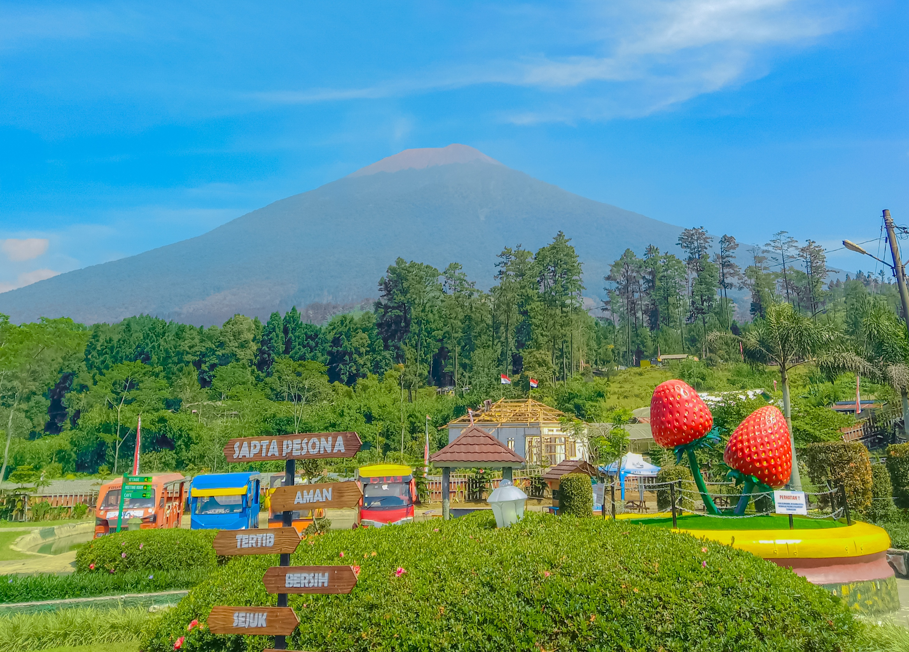

Geografi
Kabupaten Purbalingga terletak pada koordinat 101°11' BT – 109°35' BT dan 7°10' LS – 7°29' LS. Wilayahnya memiliki ketinggian antara 40 hingga 1.500 meter di atas permukaan laut, dengan dua musim utama: musim kemarau (Mei – September) dan musim penghujan (Oktober – April). Rata-rata suhu udara berkisar antara 23,2°C hingga 32,88°C.
Purbalingga berada di cekungan yang diapit beberapa rangkaian pegunungan. Di sebelah utara merupakan rangkaian pegunungan (Gunung Slamet dan Dataran Tinggi Dieng). Bagian selatan merupakan Depresi Serayu, yang dialiri dua sungai besar Kali Serayu dan anak sungainya, Kali Pekacangan. Anak sungai lainnya yaitu seperti Kali Klawing, Kali Gintung, dan anak sungai lainnya. Ibu kota Kabupaten berada di Purbalingga, sekitar 21 km sebelah timur laut Purwokerto.
Sejarah dan Budaya
Purbalingga dikenal dengan sejarahnya yang kaya, termasuk sebagai pusat kerajinan rambut palsu dan industri kecil lainnya. Tradisi lokal seperti seni calung, ebeg, dan wayang kulit masih dilestarikan oleh masyarakat setempat.
Daftar Bupati Purbalingga
| No | Nama | Periode |
|---|---|---|
| 1 | R. Wiryo Darmowidjojo | 1945 - 1947 |
| 2 | Drs. Tasdi | 2016 - 2018 |
| 3 | Dyah Hayuning Pratiwi, S.E., B.Econ., M.M. | 2019 - 2069 |
Hubungi Kami
Untuk informasi lebih lanjut, hubungi kami melalui:
- Email: info@purbalingga.go.id
- Telepon: (0281) 123-4567
- Alamat: Jl. Letkol Isdiman No.1, Purbalingga, Jawa Tengah